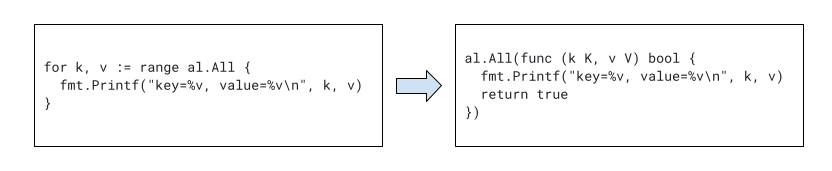

A major Go language change proposal was published earlier this week: add range over int, range over func, and there's a good chance this change will make it into a future Go release. In this post I will discuss the motivation for this proposal, how it's going to work, and provide some examples of how Go code using it would look.
Update 2024.11.02: this feature has shipped in Go 1.23; a new version of this post is available here.
Background - for-range statements today
All Go programmers know and love the venerable for ... := range loop; whether it's ranging over elements of a slice, runes of a string, or key/value pairs of a map - it's a versatile tool, and few programs do without it.
for i, elem := range mySlice {
// use index i or element elem somehow
}
However, so far for-range statements have been limited to a relatively small number of Go constructs: arrays, slices, strings, maps and channels.
Trying the proposal today
You can play with the proposed changes today, and try all the examples in this post by building Go with the patches implementing the proposal. Using the gotip tool, this is much easier than it sounds.
First of all, install gotip:
$ go install golang.org/dl/gotip@latest
Now, ask gotip to download and build Go at a special CL number (this is the CL stack implementing the proposal):
$ gotip download 510541
Once this step is done (it can take a minute or two), you're ready to run the examples; just use gotip instead of go; as in, gotip run, gotip build and so on.
All the examples shown in this post are available on GitHub.
Ranging over int
The first addition made in the proposal is range over integers. Here's a basic example of how it's going to look:
for i := range 5 {
fmt.Println(i)
}
This code is exactly equivalent to:
for i := 0; i < 5; i++ {
fmt.Println(i)
}
And will do the same thing: print out the numbers 0,1,2,3,4 - each on a separate line. Obviously, the ranged integer does not have to be a constant and assigning the range to a per-iteration value is optional:
for range n {
// do something
}
Will do something exactly n times. There's really all there is to it! This is just a clean shortcut for a very common loop (i := 0; i < n; i++). In the proposal, Russ mentioned that approximately half of the 3-clause for loops he observed in the wild can be converted to this "range over int" form. This includes Go benchmarks, where the main loop can be converted to:
for range b.N {
// run the benchmarked code
}
Ranging over integers is simple and clear, so I won't spend more time on it. Let's move on to the more interesting part of the proposal - ranging over functions.
Range over functions - motivation
Since Go's addition of generics in version 1.18, people started writing generic containers or Abstract Data Structures; generics make it possible for programmers to decouple the data structure from the types it stores in an efficient and convenient way (compared to the older way of using empty interfaces).
However, one nagging issue for custom containers remained: how do you iterate over their elements? While Go supports iteration over built-in containers like slices and maps very naturally with a for-range loop, this utility was not available for custom containers, so programmers had to come up with ad-hoc iteration methods... until now.
For a concrete motivating example, let's assume that Lisp programmers were right all along and association lists are the best data structure (TM). Using generics, we can implement a simple assoc list in Go, built on top of a slice [1]:
type AssocList[K comparable, V any] struct {
lst []pair[K, V]
}
type pair[K comparable, V any] struct {
key K
value V
}
func (al *AssocList[K, V]) Add(key K, value V) {
al.lst = append(al.lst, pair[K, V]{key, value})
}
I'll leave the "lookup" method as an exercise for motivated readers. We can create an association list and populate it:
al := &AssocList[int, string]{}
al.Add(10, "ten")
al.Add(20, "twenty")
al.Add(5, "five")
With this data structure in hand, an obvious question arises - how do I iterate over all its elements? We could cheat and range over the underlying slice, but this exposes an implementation detail -- what if we want to re-implement assoc lists without slices later?
We're left with devising a custom iteration API; something like a Next() method. This is what Go programmers have been doing so far, and you can find many examples of custom iteration APIs across the standard library and elsewhere. As you would expect, many different approaches emerged. With the new proposal, we can finally settle over a single, idiomatic approach.
I'm going to show how we use the proposal to write an iterator for AssocList; the next section will discuss the mechanics of how it works. We start by adding a method to AssocList with a special signature; it can also be a free-standing function, but for a container like AssocList, a method is natural:
func (al *AssocList[K, V]) All(yield func(K, V) bool) bool {
for _, p := range al.lst {
if !yield(p.key, p.value) {
return false
}
}
return true
}
Then use it as follows:
func main() {
al := &AssocList[int, string]{}
al.Add(10, "ten")
al.Add(20, "twenty")
al.Add(5, "five")
for k, v := range al.All {
fmt.Printf("key=%v, value=%v\n", k, v)
}
}
// Prints:
//
// key=10, value=ten
// key=20, value=twenty
// key=5, value=five
Magic! We just iterate over our container with a standard for-range loop; how does it work?
Range over functions - the mechanics
To be eligible for for-range iteration, a function is required to have a special signature of the form:
func(yield func(T1, T2) bool) bool
This says: it's a function that takes another function (by convention called yield, but it could be named anything) and returns a bool. The parameter function can either have 0, 1 or 2 parameters of arbitrary types and must return bool.
The number of yield's parameters is directly mapped to the left-hand side of the for-range loop w.r.t maximal number of returned values, e.g. [2]:
for x, y := range ... // two parameters
for x := range ... // one parameter
for range ... // no parameters
With the proposal, the for-range loop over functions will be automatically transformed by the compiler. Quoting from the proposal:
If f is a function type of the form func(yield func(T1, T2)bool) bool, then for x, y := range f { ... } is similar to f(func(x T1, y T2) bool { ... }), where the loop body has been moved into the function literal, which is passed to f as yield.
Let’s unpack this, using our AssocList iterator as an example. AssocList.All is of the right form; here's the transformation:
I've added a return value to the transformed code because the yield function has to return true if it wants iteration to continue. If yield wants iteration to stop after the current call, it should return false. The proposal says:
The boolean result from yield indicates to f whether to keep iterating.
Now looking into the definition of AssocList.All, it's clear how the iteration works. The loop in this method iterates over the items in the data structure, passing each into the supplied yield function, which the compiler substitutes for the body of the original range loop invoking All.
This is the simplest example, because it doesn't change the control flow in any way. In more complex cases the compiler applies more sophisticated transformations; for example, a break in the for-range loop body is transformed into a return false from the yield function, directing iteration to stop. A continue is transformed into a return true; more work is needed for goto statements, early returns, panics, defers and so on. For the gory details, take a look at the file comment from the CL implementing the proposal.
One detail I left out is the bool return value from the function type passed to for-range; I'll cover this later in the post.
Stopping iteration early
We've touched upon this only glancingly so far, but early stops are an essential feature of the range over functions proposal. Recall our AssocList.All method:
func (al *AssocList[K, V]) All(yield func(K, V) bool) bool {
for _, p := range al.lst {
if !yield(p.key, p.value) {
return false
}
}
return true
}
Checking for a false return from yield and using that to return early is important, because this is the invoking for-range loop telling us to stop. Consider this loop:
for k, v := range al.All {
if strings.HasPrefix(v, "fi") {
fmt.Println("found bad value, aborting!")
break
}
fmt.Printf("key=%v, value=%v\n", k, v)
}
As mentioned earlier, the break is transformed into return false when the body of this loop is passed into AssocList.All as yield. Once we've encountered a "bad value", we don't want to continue iterating, and therefore the iterator function has to exit early, too.
This is very important because iteration may be costly, have side effects (it could be reading I/O devices, for example), or because the iterator isn't even finite.
Iterating over "all" Fibonacci numbers
As an example of an infinite iterator, let's write one for Fibonacci numbers:
func genFib(yield func(int) bool) bool {
a, b := 1, 1
for {
if !yield(a) {
return false
}
a, b = b, a+b
}
return true
}
This function has a similar signature to AssocList.All, except that it only takes a single parameter. This means the associated for-range loop will yield at most a single value. Here's how we can use it:
func main() {
for p := range genFib {
fmt.Println(p)
if p > 1000 {
break
}
}
}
This will print Fibonacci numbers until (and including) the first one over 1000. Clearly, there is no "end" to such an iterator; there are infinitely many Fibonacci numbers. In fact, the for loop in genFib doesn't even have an end condition; it only exits when yield returns false. This happens when the break statement from the if p > 1000 condition is triggered.
Composing iterators
So far the iterator examples have all been linear: the iterator had a single loop that yields all the values one by one. Some iteration patterns are not linear, however; for example, consider iterating over a binary tree:
type Tree[E any] struct {
val E
left, right *Tree[E]
}
func (t *Tree[E]) Inorder(yield func(E) bool) bool {
if t == nil {
return true
}
return t.left.Inorder(yield) && yield(t.val) && t.right.Inorder(yield)
}
This code follows a familiar recursive pattern; it's fairly obvious that yield is invoked on the tree elements in-order. However, there's another important thing to note - how stopping the iteration is handled. By now, we know that a break in the for-range loop will cause yield to return false. However, Tree.Inorder isn't just a linear loop that can return whenever yield returns false; there's potentially a whole stack of recursive calls to unroll.
Here, we finally see what the bool return value from the iterator function is for. The iterator function itself returns false whenever its yield or one of the recursive calls returns false. This makes sure that all recursive calls return as soon as possible and don't visit additional elements after an iteration stop was requested (via yield returning false).
Returning a value from the iterator function makes it possible to compose multiple iterators with proper stopping semantics; while this return value isn't actually checked by the driving for-range, it's used by the iterator functions to communicate among themselves. By convention, it should be false for "stop" and true for "continue", similarly to the contract of yield.
Here's the in-order tree iterator in action:
// Create a sample tree:
//
// 10
// / \
// 20 40
// / \
// 30 39
tt := &Tree[int]{
10,
&Tree[int]{
20,
&Tree[int]{30, nil, nil},
&Tree[int]{39, nil, nil}},
&Tree[int]{40, nil, nil},
}
for v := range tt.Inorder {
fmt.Println(v)
}
// Prints:
// 30
// 20
// 39
// 10
// 40
Additional iteration examples
bufio.Scanner is a useful type for iterating over lines in text; it can also be used to work with other separators, but let's just talk about newline-separated lines for simplicity.
The canonical way of iterating over all lines in the input is:
scanner := bufio.NewScanner(os.Stdin)
for scanner.Scan() {
fmt.Println(scanner.Text())
}
if err := scanner.Err(); err != nil {
fmt.Fprintln(os.Stderr, "reading standard input:", err)
}
This is a great example of an ad-hoc iteration method the designers of Go came up with, before the language had real iterator support. There's nothing wrong with this approach - it's clear and it works well. However, without a standard for iteration, multiple approaches emerge and one always has to consult the documentation for the right way to do this.
With the range over functions proposal, we can write an iterator that works in a for-range loop. I'll wrap Scanner to demonstrate this without modifying the standard library:
type myScanner struct {
s *bufio.Scanner
}
func newScanner(r io.Reader) *myScanner {
s := bufio.NewScanner(r)
return &myScanner{
s: s,
}
}
func (ms *myScanner) All(yield func(string) bool) bool {
for ms.s.Scan() {
if !yield(ms.s.Text()) {
return false
}
}
return true
}
func (ms *myScanner) Err() error {
return ms.s.Err()
}
And we can use it as follows:
scanner := newScanner(os.Stdin)
for line := range scanner.All {
fmt.Println("got line:", line)
}
if err := scanner.Err(); err != nil {
log.Fatalf("reading stdin: %v", err)
}
One could envision an All method being added to the actual Scanner type if the proposal is accepted.
Another example that I like was mentioned by Russ in the proposal discussion. It uses a closure to create a specialized iterator from a slice:
func Backward[E any](x []E) func(func(int, E) bool) bool {
return func(yield func(int, E) bool) bool {
i := len(x) - 1
for i >= 0 && yield(i, x[i]) {
i--
}
return true
}
}
Usage:
func main() {
s := []int{5, 6, 7, 8, 11, 22}
for _, e := range Backward(s) {
fmt.Println(e)
}
}
// Prints:
// 22
// 11
// 8
// 7
// 6
// 5
I think it's a neat demonstration of the power of higher-order functions in Go. An iterator is already a higher order function (it's a function type that takes another as a parameter), and Backward is another level up - it takes a slice parameter and builds a closure, returning an iterator tailored for this slice.
Final words - push vs. pull iterators
I'm pretty excited about this proposal - it improves the ergonomics of Go programming with only minimal added complexity [3]. If anything remains unclear, feel free to send me an email - I can add more examples.
Finally, if you read the proposal and other documents related to it, you'll quickly run into "push" vs. "pull" iterators; what do these terms mean?
Simply put, "push" iterators push their values into a function given to them; the iterators in this proposal and the examples in this post are therefore all push iterators - they take a yield function and generate values by invoking it; yield's return value is then used to determine whether the iterator should continue generating values, or else stop.
"Pull" iterators look somewhat differently; a pull iterator is a function you can invoke multiple times and its signature is something like:
func() (value T, cont bool)
Where value is the generated value and cont says if the iterator is ready to produce more values, or else is done.
The control flow around push vs. pull iterators is very different. Push iterators "drive" the iteration process, feeding values into a function until they're done or explicitly asked to stop. Pull iterators, on the other hand, are driven from elsewhere and have to retain state between calls. Both kinds of iterators are useful for different patterns; the proposal discussed here only deals with push iterators, but the Go team is also looking at various ways to add support for pull iterators. See Russ's coroutine post for one possible approach.
| [1] | As an exercise, if you want to feel like a real Lisp hacker, feel free to implement it using a proper linked list. |
| [2] | Note that I'm saying maximal number of returned values. Even if our yield takes two values, we can still iterate with for x := range and only the first value fed to yield will be assigned to x. This is just like iterating over regular maps, where the for k, v := range form obtains both keys and values, but the for k := range form is valid as well - for iterating just over keys. |
| [3] | At least user-observable complexity. The implementation of the proposal is rather involved in order to handle all forms of control flow properly. |